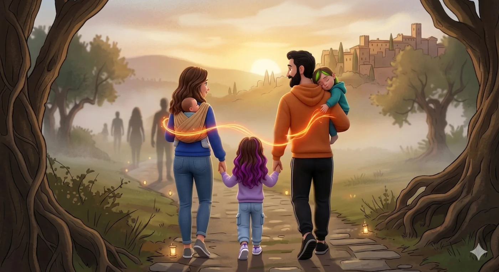
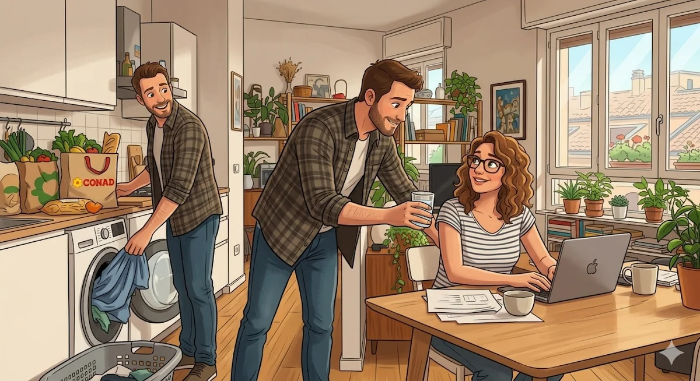
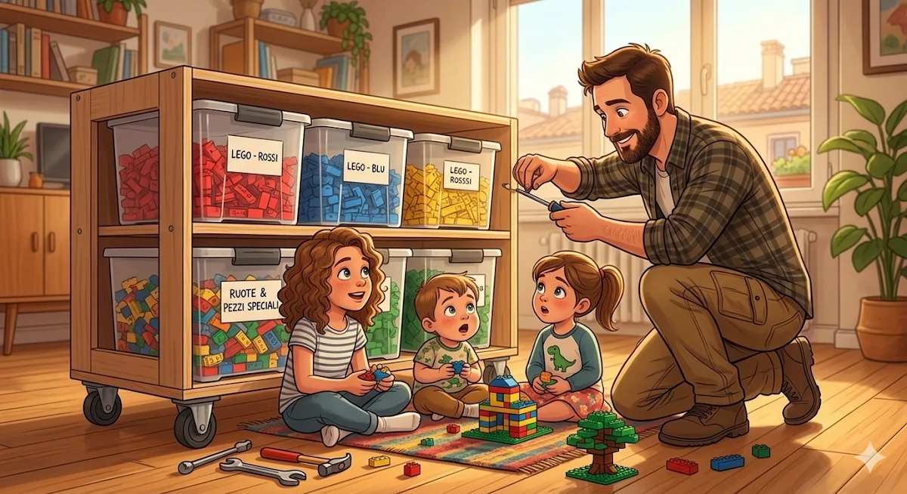
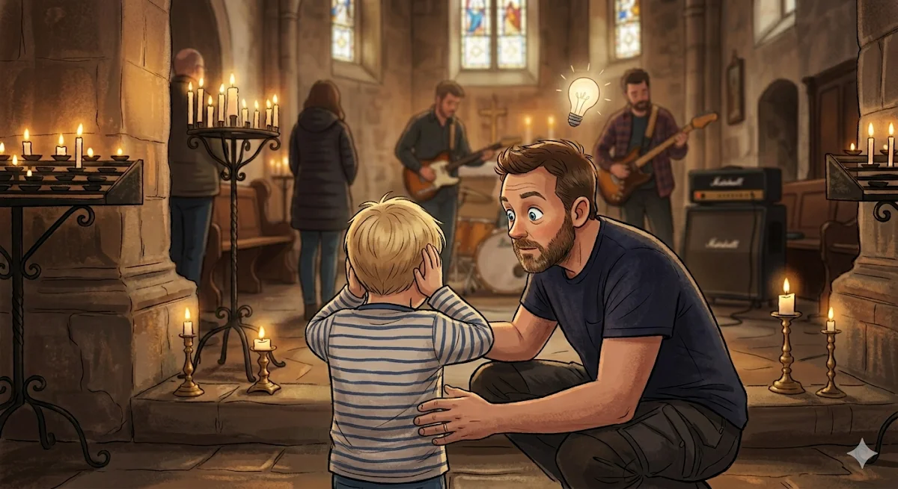
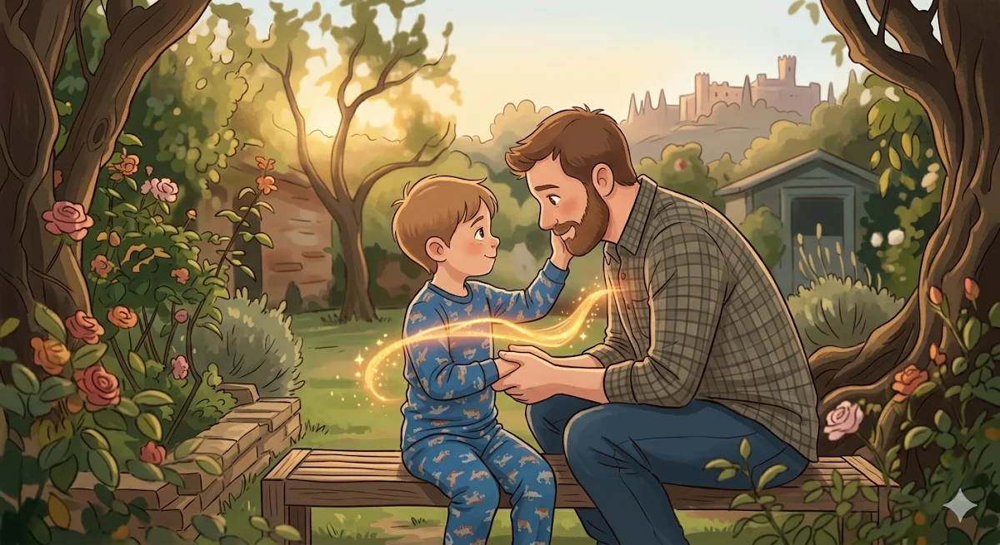

Ciao a tutti, anime coraggiose!
Oggi voglio parlarvi di un sostegno fondamentale nella mia vita, la mia roccia, il mio Francesco. In questo percorso neurodivergente, spesso l'attenzione è sulla mamma, ma dietro a ogni genitore che si impegna, c'è (spero!) un partner altrettanto presente.
E il mio, credetemi, è una forza della natura!

Non un "Papà di Una Volta": La Sua Intuizione e Priorità
Ricordo il primissimo segnale che Francesco fosse "diverso".
Nonostante la sua predisposizione fosse un’altra, si è messo in gioco per non dire "si è sempre fatto così" o "il papà comanda".
Ha iniziato a osservare se stesso e a mettersi in discussione, dando la priorità assoluta alla relazione con i nostri bambini piuttosto che alla "vita facile" che magari sognavamo.
Non è scontato, in una società che ancora a volte relega gli uomini a ruoli stereotipati.
Lui è stato presente, curioso, sempre pronto ad andare oltre le apparenze.
La Nostra Squadra 50/50: Il "Francesco-Effetto" Quotidiano
Il suo supporto è pura magia quotidiana.
Quando io parto per la tangente con mille idee (sì, sono un vulcano anche io!) o mi sento sopraffatta, è lui che mi porta un bicchiere d'acqua, mi ricorda che devo anche fare la pipì (eh, la realtà della mamma!) o mi "costringe" a staccare il computer e andare a dormire.
E quando proprio non ho la forza di alzarmi dal letto, mi prende per mano, o si occupa lui dei bambini, lasciandomi riposare.
Ma la cosa più importante: non lo vive come un "aiuto", ma come la sua parte.
Siamo genitori insieme, 50 e 50. Non c'è un "capo" indiscusso, ogni decisione è condivisa. Non sono io la "mamma che deve fare di più" e lui il "papà sul divano".
Noi cinque siamo una squadra, sempre.

Un Supporto Che Si Fa Cose Concrete
Francesco non si occupa solo della lavatrice, della spesa o della cena (che già sarebbe tantissimo!).
Lui ascolta me, ascolta i bambini, e trasforma le nostre esplosioni di idee in realtà concrete.
Io con i cacciaviti e i martelli sono un disastro, ma lui si è messo d'impegno e ha costruito un fantastico mobile con rotelle per tutti i Lego dei bambini!
Un tavolo con cestoni per i mattoncini divisi per colore, dove Beatrice, Ginevra e Federico costruiscono meraviglie senza sosta.
È il suo modo di dire: "Io ci sono, e rendo possibili i vostri sogni."

La Lanterna nella Nebbia: L'Intuito di Papà
Ci sono stati momenti in cui la sua lucidità mi ha aiutato a distinguere tra un bisogno neurodiverso e un semplice "capriccio".
Un episodio mi ha aperto gli occhi: eravamo a messa, con un suono di chitarre fortissimo.
Federico, che all'epoca non aveva ancora una diagnosi di autismo, si è tappato le orecchie, ha iniziato a dondolare e urlare disperato. Io non capivo, pensavo fosse noia.
Ed è stato Francesco a dirmi: "Cavolo, sembra proprio una reazione autistica!"
Da lì, la lampadina si è accesa, e abbiamo iniziato il nostro percorso verso la diagnosi di Federico.
E quando mi sentivo una "visionaria" agli occhi degli altri, lui ha sempre sostenuto il mio pensiero, mi ha difeso e ha difeso la nostra visione, anche discutendo con chi non capiva.
È il mio baluardo.

Il Segreto della Nostra Forza: Complementarità e Amore Gratuito
La nostra forza siamo noi, siamo perfettamente complementari.
Quando io non ho le energie, lui le trova.
Quando lui è stanco, riesco a rimetterlo in sesto io.
Insieme, questa salita ripidissima che è il percorso della neurodiversità diventa fattibile, affrontabile.
Se Francesco dovesse dare un consiglio, credo direbbe semplicemente: "Esserci. Con quello che si è, con quello che si ha, nelle proprie imperfezioni e fatiche."
La nostra generazione ha spesso dovuto "guadagnarsi" l'amore dei genitori, rispecchiando un ideale.
Ma noi vogliamo che i nostri figli sappiano che il nostro amore è gratuito.
C'è, anche quando ci arrabbiamo o perdiamo le staffe (siamo umani!).
Ci fermiamo, chiediamo scusa, e ripartiamo.
Perché i bambini devono fare i bambini, e noi adulti dobbiamo essere l'esempio di regolazione emotiva, mostrando che a volte si ha bisogno di "5 minuti" per non esplodere.
Un grazie immenso al mio Francesco,
senza di lui, questo viaggio sarebbe stato mille volte più difficile.
E voi, avete una "roccia" al vostro fianco?
Un partner che vi supporta in questo viaggio unico?
Condividete le vostre storie nei commenti!
